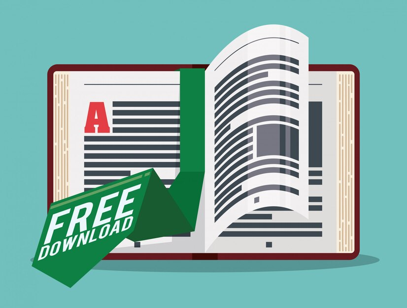

Banned Books in Oklahoma Schools
There are currently 39 books banned across many school districts in Oklahoma:
- "Bless Me, Ultima" by Rudolfo Anaya
- "I Know Why The Caged Bird Sings" by Maya Angelou
- "Infandous" by Elana K. Arnold
- "Whale Talk" by Chris Crutcher
- "Narrative of the Life of Frederick Douglass" by Frederick Douglass
- "I Was Here" by Gayle Forman
- "Symptoms of Being Human" by Jeff Garvin
- "Melissa (George)" by Alex Gino
- "Bad for You (Sea Breeze Series)" by Abbi Glines
- "Lord of the Flies" by William Golding
- "Looking for Alaska" by John Green
- "Speak" by Anderson, Laurie Halse
- "A Raisin in the Sun" by Lorraine Hansberry
- "The Outsiders" by S.E. Hinton
- "Burned (Burned Series)" by Ellen Hopkins
- "Crank (Crank Series)" by Ellen Hopkins
- "Their Eyes Were Watching God" by Zora Neale Hurston
- "Brave New World" by Aldous Huxley
- "To Kill a Mockingbird" by Harper Lee
- "Hold Me Closer: The Tiny Cooper Story (Will Grayson, Will Grayson Series)" by David Levithan
- "For Black Girls Like Me" by Mariama J. Lockington
- "A Court of Frost and Starlight" by Sarah J. Maas
- "Fairest: Levana's Story (The Lunar Chronicles Series)" by Marissa Meyer
- "Eclipse (Twilight Series)" by Stephenie Meyer
- "The Bluest Eye" by Toni Morrison
- "Before I Fall" by Lauren Oliver
- "Broken Things" by Lauren Oliver
- "Bridge to Terabithia" by Katherine Paterson
- "Mastiff (Beka Cooper Series)" by Tamora Pierce
- "All American Boys" by Jason Reynolds
- "House of Furies (House of Furies Series)" by Madeleine Roux
- "The Lovely Bones" by Alice Sebold
- "Between Shades of Gray" by Ruta Sepetys
- "The Way I Used to Be" by Amber Smith
- "Of Mice and Men" by John Steinbeck
- “The Hiding Place” by Corrie Ten Boom
- “The Hate U Give” by Angie Thomas
- “Suicide Notes From Beautiful Girls” by Lynn Weingarten
- “The Dark Descent of Elizabeth Frankenstein” by Kiersten White

Where to Find These Books
Check out your local public libraries for these titles! Your library may also have a digital database for checking out eBooks, which is another great resource for finding this titles, such as:
Libby
Hoopla
Cloudlibrary
If you want, you can purchase these books through many sellers, including secondhand. And you can look for past banned books that are now public domain on websites like Librivox and FeedBooks!